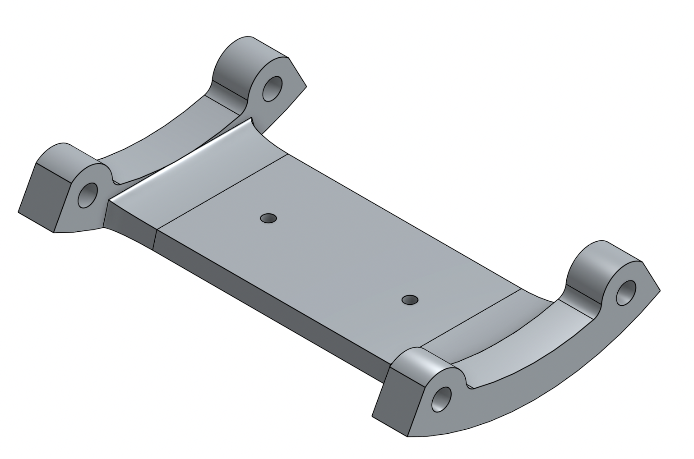
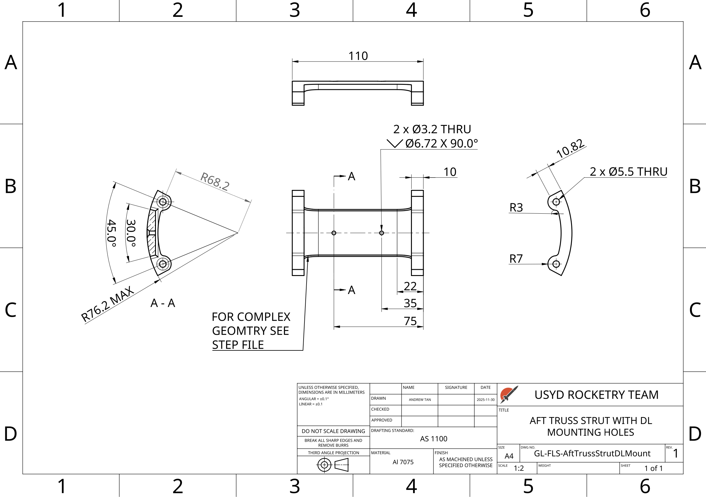
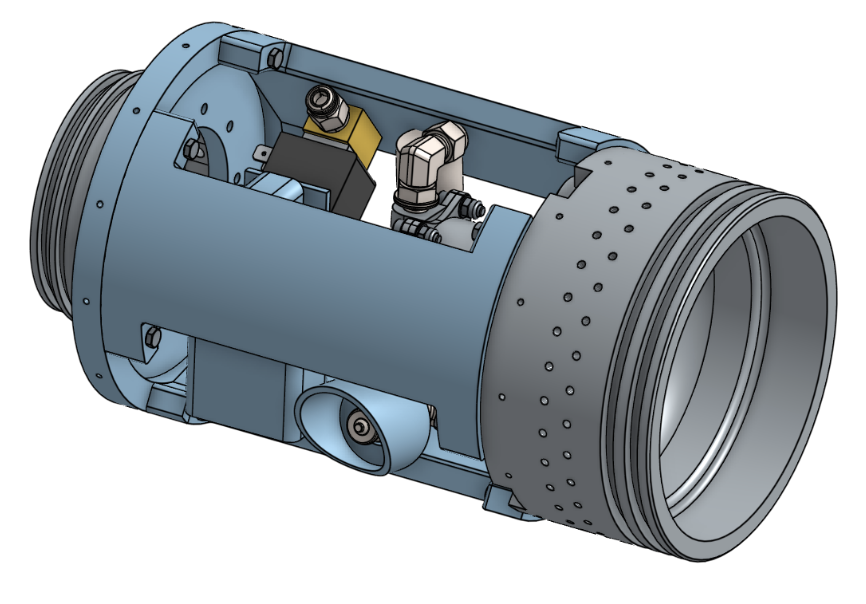
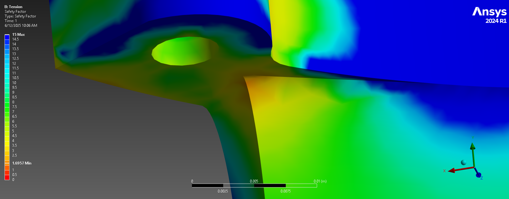
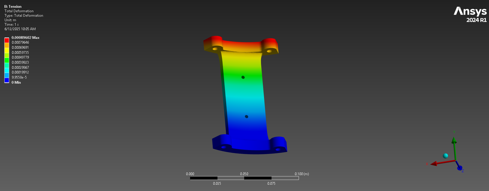
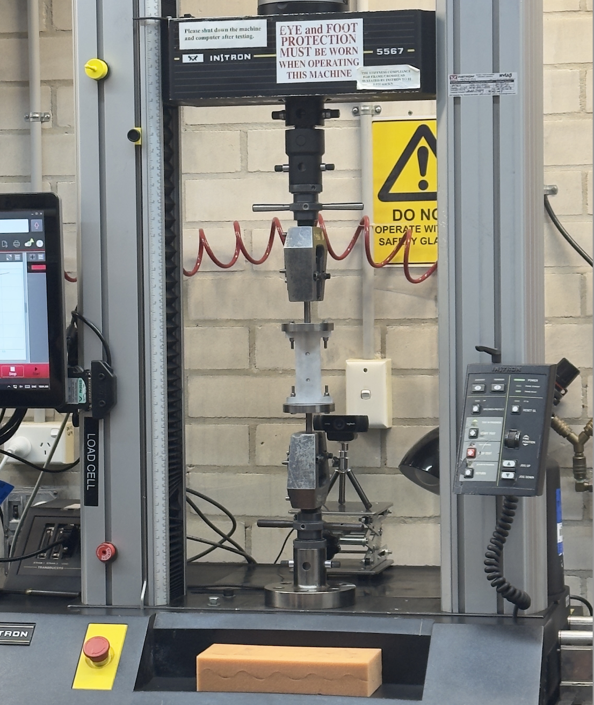

Galah 2026 rocket: aft truss
USYD Rocketry Team, 10,000 ft hybrid launch vehicle
- Role
- Flight Systems Engineer
- Part
- Aft truss, 6061-T6 aluminium
- Dates
- Aug 2025 to present
- Tools
- Onshape, ANSYS 2024 R1, Instron 5567
Overview
Galah is the USYD Rocketry Team's 10,000 ft hybrid launch vehicle, with a simulated apogee of about 11,500 ft. As a Flight Systems Engineer I designed its aft truss, the structure joining the oxidiser tank to the combustion chamber.
Beyond the aft truss, I also designed the forward truss and the nose cone, avionics and aft recovery bulkheads, helped design and iterate the chamber adapter plate, and was a core member of the composite layup team for the airframe.
The three steps below follow the aft truss from requirements and concept selection, through FEA, to breaking struts on a test machine.
Aft Truss Design and Optimisation


Requirements
The aft truss joins the oxidiser tank to the combustion chamber, through an adapter plate that bridges their different diameters, and doubles as the coupler for the boat tail. That fixes its outer diameter at 152.4 mm to match the boat tail and its length at 6 inches, and means every load from the tank passes through it. It also has to house the main oxidiser valve, flight computer, solenoid valve, battery, datalogger and quick disconnect, with room to reach them with tools.
Load cases
Two cases drive the design: compression from about 4.1 kN of engine thrust during boost, and combined axial and bending load from the 10 kN main parachute deployment. The deployment angle is unknown, so the recovery load was swept across angles; peak stress occurs near 85°, almost side-on to the rocket.
Concepts explored
I developed two concepts in a fully parameterised Onshape model. A webbed truss of four diagonal strut pairs, machined as a single part, would have removed the alignment problems of earlier multi-part trusses and handled torsion well. But its thin, curved members left almost no flat faces to mount the datalogger and solenoid valve, so the conventional straight-strut design won.
Optimisation
The key variable was the gap angle between struts, which sets tool access. A wider gap needs thicker struts to hold the same 1.5 minimum safety factor, and beyond about 86° the required thickness climbs steeply, so 86° became the trade-off between access and mass. Three struts came out lighter than four at the same gap angle.
The bolt flanges face outwards so a torque wrench reaches every bolt, an improvement on the internal flanges of earlier trusses. The datalogger housing and solenoid valve mount straight onto the struts with M3 screws, with the screw holes accounted for in the strut strength.

FEA simulation


To check the hand calculations, I modelled a single strut in ANSYS under the tension load case, with one end flange fixed and the load applied through the other.
Results
- Minimum safety factor of 1.70, at the fillet where the strut web meets the end flange, beside a bolt hole.
- Maximum total deformation of 0.90 mm, at the loaded end.
The hand calculations in the design review put the critical case at a safety factor of 1.91, on the tension side of the truss under side-on recovery load. The FEA minimum of 1.70 still clears the 1.5 design target.
I ran a mesh convergence study to make sure the results didn't depend on mesh size, used the results to drive material selection, and wrote up the setup and results as simulation documentation for the team.
Destructive testing

The truss was designed to a 1.5 minimum safety factor, rather than something higher, because it would be proven by destructive testing. I wrote the test procedure and tested aluminium truss struts to failure. For the static test, the strut was bolted between two end plates and pulled in tension through the machine's grips.
Across the static and dynamic tests I identified three failure modes: yield, buckling and thread shear-out, the last being one of the fastener failure modes checked in the design. I then compared the measured failure loads with the FEA predictions to validate the design.